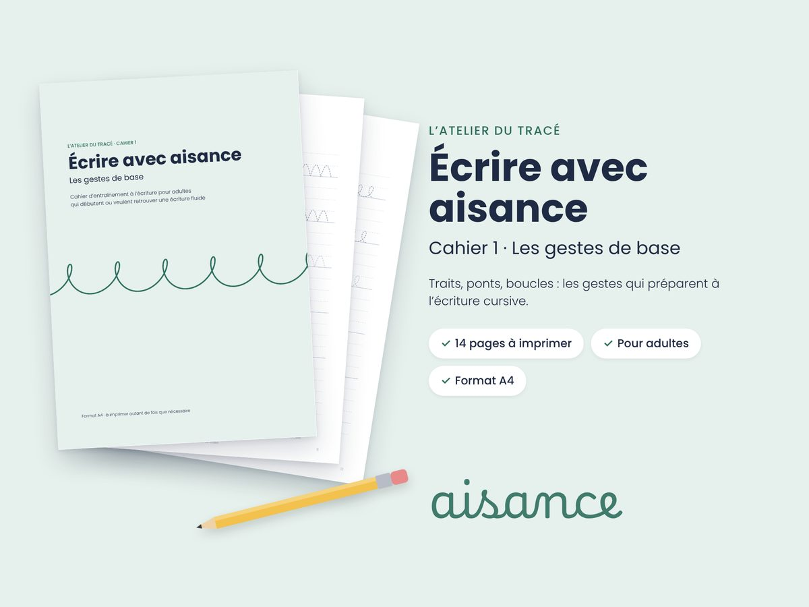

Écriture adulte
Cahier 1 · Les gestes de base
Traits, ponts, boucles : 11 exercices progressifs pour préparer la main à l’écriture.
Écrire avec aisance
Pour apprendre à écrire, ou pour retrouver une écriture lisible et fluide. Des pages sobres, une progression claire, et le modèle cursif enseigné en France.
Grandes lignes au début, très peu de texte, des mots utiles au quotidien. Les consignes peuvent être lues par un formateur ou un proche.
Pour une écriture plus régulière et plus lisible : on reprend les gestes, puis chaque lettre et ses liaisons, sans se presser.

Traits, ponts, boucles : 11 exercices progressifs pour préparer la main à l’écriture.

Une page par lettre de a à z, avec des mots du quotidien, sur le modèle cursif français.
Les majuscules cursives, puis l’adresse, la liste de courses, le petit mot. Inscrivez-vous aux nouveautés pour être prévenu.

Ces cahiers sont des supports d’entraînement. Ils ne remplacent pas l’accompagnement d’un orthophoniste, d’un graphothérapeute ou d’un formateur en alphabétisation en cas de difficulté importante.
Après le paiement sur Payhip, vous recevez un e-mail avec un lien de téléchargement. Le fichier est un PDF que vous gardez.
Oui, autant de fois que vous voulez pour votre usage personnel, familial ou pour votre classe.
Une imprimante, du papier A4 et un crayon. Pour l’écriture, un crayon à papier ou un stylo qui glisse bien est idéal.
Non. Ce sont des supports d’entraînement. En cas de difficulté importante, un orthophoniste, un graphothérapeute ou un formateur en alphabétisation reste la bonne personne à consulter.